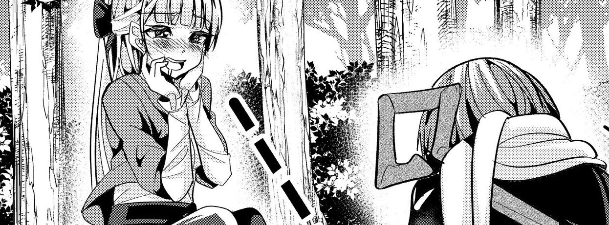

About This Thotty Speicmen
Fleur is one of the imperial knights in the story, a very skilled one at that. She has this annoying habit of bothering people but her care delivers when it counts.
I mean she can look at my dick anytime kappa
Characteristics
Thotty
Waifu
Wants your dicc
Unending lewd jokes
Wants your babies
Relations
Cornelia Leo[Sacred Sword]: Sacred Sword used to be an imperial knight just like Fleur. Fleur has a huge respect for Sacred Sword.
Fooly Dent: Fleur was skeptical with Fooly at first but after witnessing his magic powers and knowing his personality more, Fleur fell more in love with him and desires to take him all for herself.
Anri Dent: They had a rough relationship at first due to Fleur's clinginess on fooly and Anri as the sister could not stand the sight of Fleur. Eventually they developed a few understanding and bcame friends, but Anri is still constantly trying to keep Fleur away from Fooly